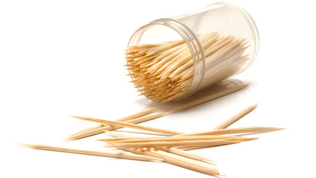
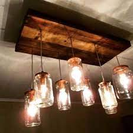
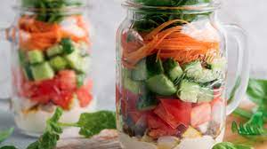
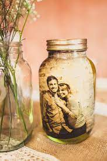
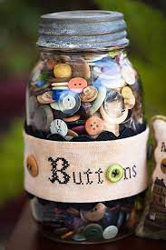
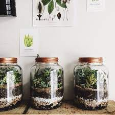
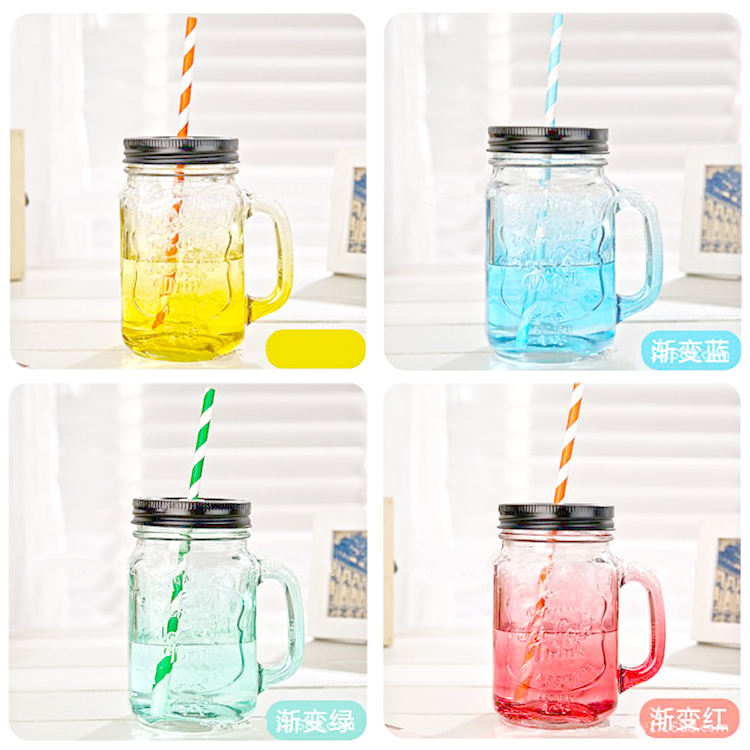
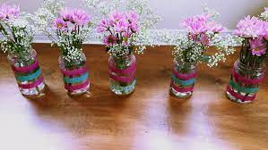

- 
Puedes guardar tus mondadientes dentro de un frasco pequeño, solo agujerea tu la tapa de tu frasco

Puedes con ayuda de los mondadientes que guardaste en tu frasco de vidrio, usar tu frasco para germinar una semilla de aguacate
- 
Con tus tarros de vidrio puedes hacer pequeñs lamparas de noche
- 
Puedes guardar los frascos cerrados con comida en el refrijerador, y así conservar tu comida para otro día
- 
Puedes meter fotos en ellos y hacer unos porta-retratos unicos
- 
Siempre hay pequeñas cosas que no sabes donde poner, por que no vas a juntar muchos o por que son muy raros, puedes guardarlos en uno de tus confiables frascos de vidrio
- 
Puedes hacer terrarios y ser unico y diferente
- 
Puedes lavar muy bien tus frascos y usarlos como vasos

¿Te falta un lugar para poner tu cepillo de dientes, por que siempre se te pierde? Usa un frasco de vidrio
- 
Tambien puedes usar la vieja confiable y usarlos de florero